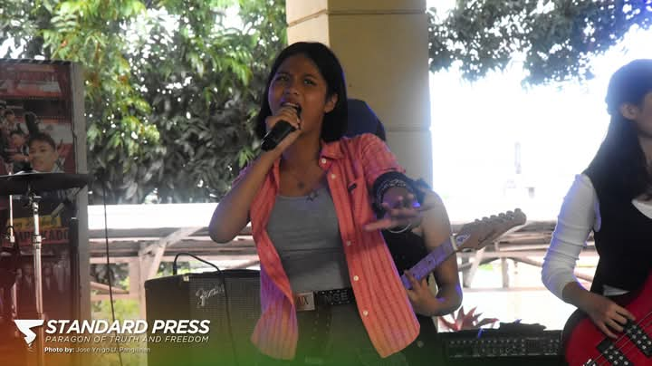
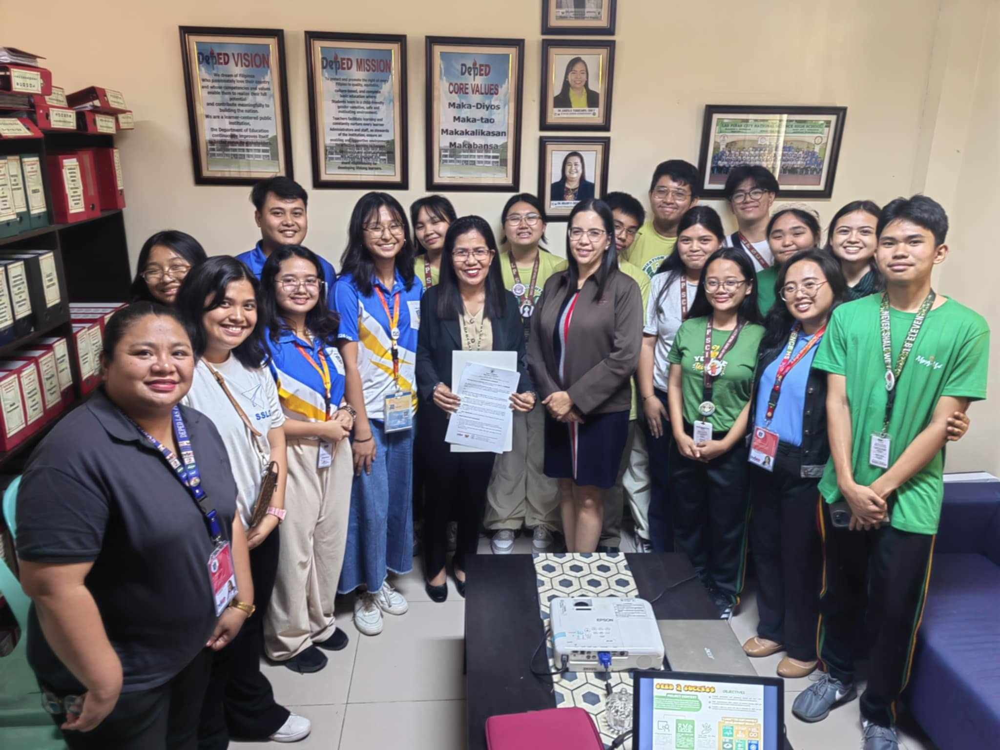

Join me as we look through the different things I experienced throughout the 4th quarter, including my favorite event of the year!
My Top 5 Activities of the Quarter!
Street Dance Competition
We had practcied for nearly 2 months for this competition, staying 2 hours after class ended EVERYDAY. But, it was all worth it. During this period, I met the fidelities and got to communicate with them. I enjoyed being with them. Not only that but I was able to express my love for dancing. There were many ups and downs because in the end we got 4th place! So... I am willing to join again!
Monologo PT
To be hoenst, I really was scared of performing this monologo because I am not used to speaking full Filipino. This has proved to be a struggle for me until now. For this PT, we had to cosplay our Noli me Tangere character and make our own script to act as that character's dialogue. Mine was Don Rafael Ibarra, and though it was a lengthy process, I kind of enjoyed acting as a character.
Miting De Avance
It was the day of SSLG elections and therefore the school held a miting de avance, where each of the party members will explain their programs. It was very interesting to hear what were the main goals of each partylist. Some were focused on the health of students while others focused on improving the state of the school. In this picture we see Jameela, my friend who ran for Grade 10 level rep. Even if she did not win, I am still proud of her efforts that she put in the program.

Battle Of The Bands
Though I was not there to experience the contest, I still was able to feel the music and energy from the videos that my friends and classmates sent. It was such a shame I was not there to experience it, but I still enjoyed listening to the different bands singing. Izza, a members of the group 6IX, is seen in this photo as the main vocalist of the group. She even won best vocalist! LET'S GO IZZA AND CONGRATS TO 6IX AND COOL PALS!!!

Seed to Success
Recently, the YES-O organization and APEC School have collabed together to help promote sustainability and better plant and environment management at LPSci. The photo shows the photo we took after the SSLG president and our principal, Ms. Honrales, signed the contract to allow thr APEC Schools to send vegetable plants to us. Our clubs and organization aims to teach students on how to take care of the environment and I think this Seed to Success is a great first step. The photo shows the program managers with the YES-O adviser, current officers and new officers.